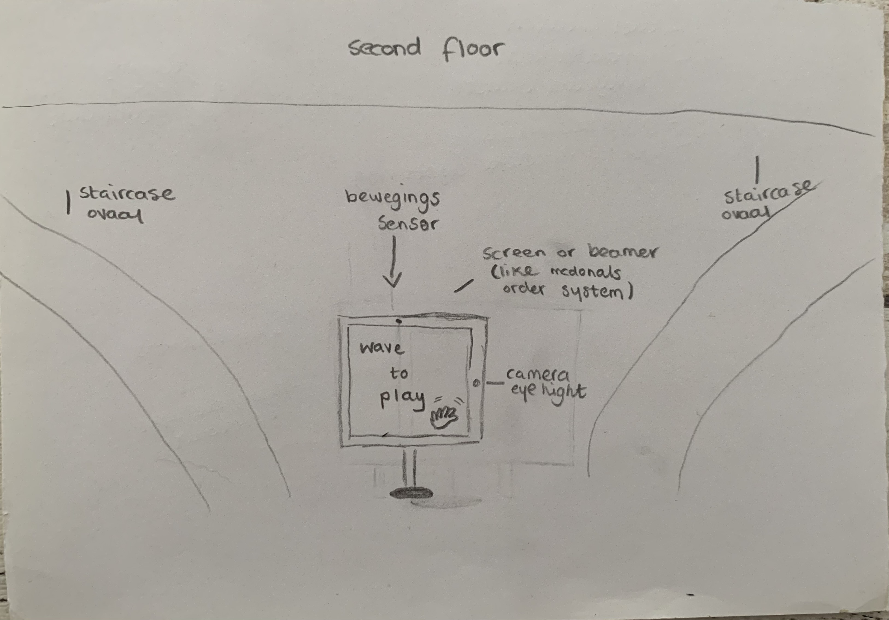
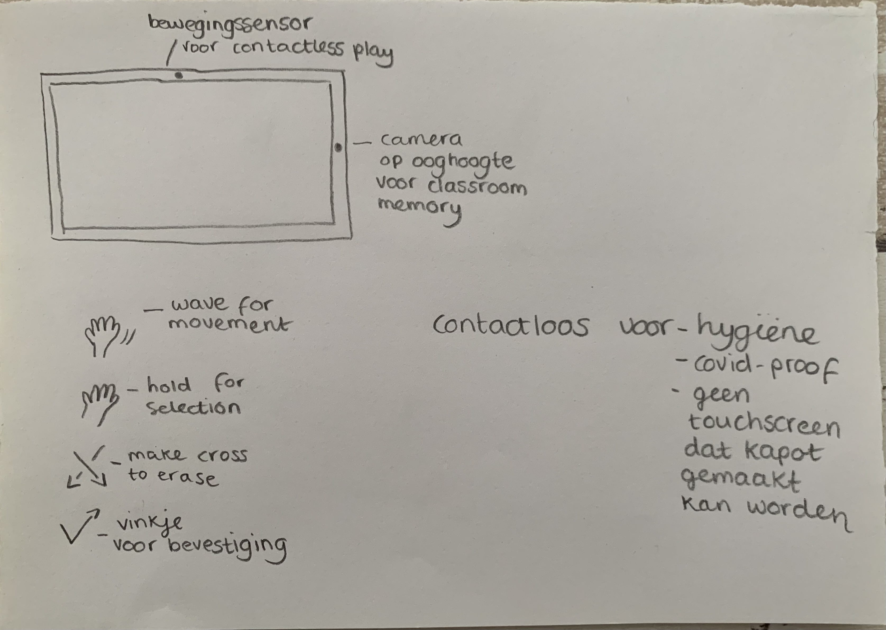
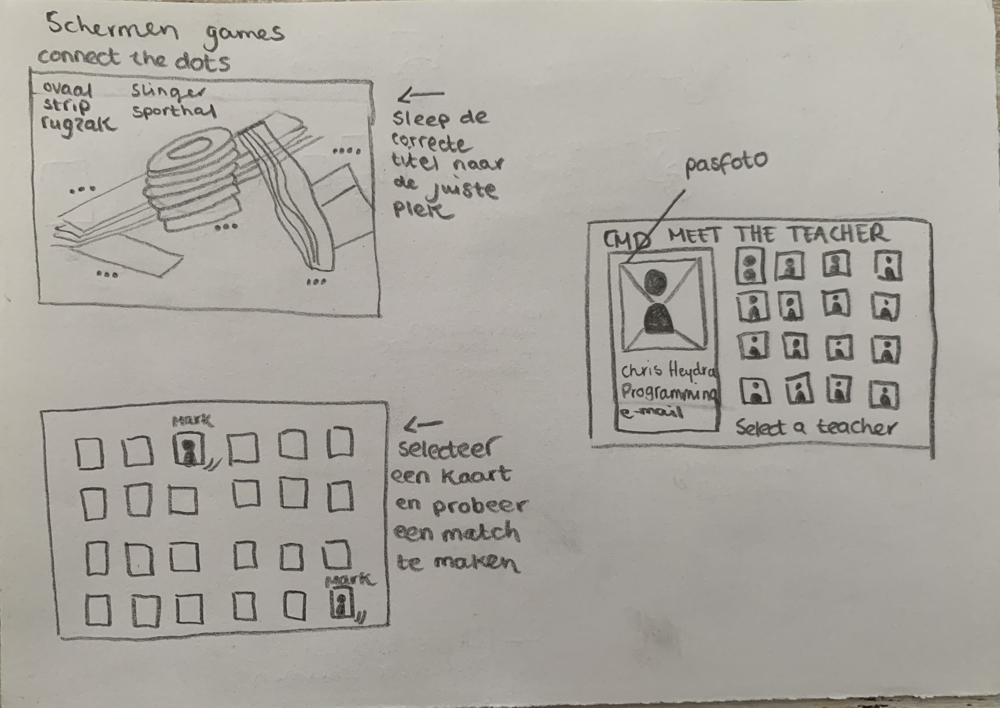

Playful interactions is zoals het woord al zegt interactie creëren op een speelse manier. Playful interaction kan op diverse manieren geïmplementeerd worden, zo kan je denken aan single player, multiplayer, gedeelde ruimtes of objecten waar je individueel kan spelen of juist samen moet werken. Playful interaction kan zorgen rijke user experiences en kan zorgen voor gedragsverandering, beweging en of educatie op een speelse en positieve manier. In de onderstaande topic assignments zullen diverse voorbeelden van playful interactions worden opgenomen en besproken.
Voor de topic assignment van deze week is het de bedoeling om een net concept voor een sociale playful interface te bedenken welke ingezet kan worden voor het THUAS gebouw. Met de pandemie en de bijbehorende lockdowns in het achterhoofd, leek het mij leuk om een interface te bedenken voor eerstejaars of de leerlingen die nu voor het eerst weer op school komen. Ik weet nog dat ik het zelf als eerstejaars beste en opgave vond om een nieuwe plek te leren kennen (rugzak, slinger, ovaal, wat?) en daarnaast ook nog eens je klasgenoten en nieuwe docenten te herinneren. Daarom heb ik een playful interface bedacht waarbij studenten dit al spelenderwijs kunnen leren. Het spel kan zowel single player als multi user gespeeld worden. Er zal door middel van een digitaal scherm en of een beamer met een sensor worden gespeeld (shared space and object). Door middel van een sensor (zoals bij just dance) zullen bewegingen van de deelnemers op worden gepikt. Er zijn drie spellen die gespeeld kunnen worden, klasgenoot memory, raad de docent en vul de plattegrond. Voor klasgenoot memory zal er een kaart gecreëerd worden met een een foto en een naam van de desbetreffende persoon. Als de klas compleet is zal er een digitaal memory spel worden gemaakt om zo op spelenderwijs snel je klasgenoten van gezicht en naam te leren kennen. Ook is het mogelijk om dit te doen met docenten. De docenten kaarten zullen standaard in het systeem staan en op hun kaarten zal een foto, naam en de (eerstejaars) vakken die zij geven staan. Tot slot is het mogelijk om de plattegrond in te vullen met de juiste namen. Op deze manier zullen nieuwe studenten snel het gebouw van de Haagse Hogeschool leren kennen.
  Voor het tweede gedeelte van de assignment is het de bedoeling om een voorbeeld van playful interaction te zoeken welke nog niet in de les behandeld is. Ik heb uiteindelijk gekozen om de Rebskoven installatie in mijn portfolio op te nemen. Dit project is ontworpen door Overgaard Architects en geïnstalleerd door UNO & UNIQA. Industriële gebouwen en een lage verstedelijking hebben ervoor gezorgd dat de wijk Valby in Kopenhagen geïsoleerd is gebleven in vergelijking met de rest van de stad. Toen de Carlsberg brouwerij besloot te verhuizen kreeg de wijk ook te maken met deïndustrialisatie. De gemeenteraad opende een internationale prijsvraag om inzendingen te verzamelen met ontwerpen voor een aantal tijdelijke installaties welke respect bieden aan het industriële erfgoed van de wijk. Het doel van deze installaties was om ruimtes van het brouwerijgebouw nieuw leven te geven en openbaar gebruik van de bebouwde kom te bevorderen. Een deel van dat industriële erfgoed bestaat uit drie metalen veranda’s welke ooit werden gebruikt vrachtwagens te lossen en stallen. In een van deze veranda’s werd de "Rebskoven" (Forest of Ropes) installatie geplaatst. De installatie bestond uit 3.500 verticale stukken wit touw die aan het plafond van de vijf meter hoge veranda hingen. De touwen bedekten het gehele plafond en creëerde zo een dichte jungle waar de gebruiker kan verdwalen, spelen en ontdekken. De touwen zijn stevig bevestigd aan de onderkant van het verandadak door middel van een netwerk van metalen balken, kunnen het gewicht van een persoon dragen zodat de langere touwen kunnen worden gebruikt om te slingeren of aan elkaar te knopen om een schommel te maken. Door ook kortere touwen in de installatie te plaatsen kan de ruimte gebruikt worden voor verschillende evenementen en of plekken om te hangen. Ook is er een voet-en fietspad dwars door de installatie geplaatst. De installatie is een shared space waar zowel parallel als independend gespeeld kan worden. De metalen balken van de installatie bevatte een verlichtingssysteem zodat de installatie ‘s nachts verlicht blijft.
Ik vind dit echt een mega leuk topic, de voorbeelden uit de les spraken mij enorm aan omdat je op een speelse manier het gedrag van anderen kan beïnvloeden. Ik denk dat dit zeker een toekomst heeft, wie weet wat meer digitaal. We leven nu in een wereld waar het aan kan voelen alsof je al zoveel moet, dan kan het verfrissend aanvoelen als dingen op een speelse manier kunnen. Nu we net uit de pandemie komen hebben mensen ook weer behoefte aan verbintenis, dan zal zoiets als playful interfaces op een luchtige manier verbintenis en connectie tussen mensen kunnen creëren. Ik wist niet zo goed wat ik moest verwachten bij playful interfaces maar ik was blij verrast met de voorbeelden uit de les. Tijdens de workshop heb ik het ook met Paul gehad over playful interfaces in kunstinstallaties, ik wilde namelijk graag een kunst-gerelateerd onderwerp kiezen voor mijn research topic. Het was leuk om dit samen te bespreken en interessant om te zien hoeveel leuker playful interactions, musea kunnen maken. Dit is eigenlijk ook ideaal om meer kinderen naar het musea te krijgen, ik weet in ieder geval dat ik zo'n museum als kind zijnde (nu eigenlijk ook) hartstikke leuk had gevonden. Het voorbeeld uit mijn gekozen research is ook iets waar ik heel enthousiast werd, aangezien het een combinatie van playful interaction, kunst en upcycling is. Al met al een superleuk topic dat op meerdere manieren geīmplementeerd kan worden.